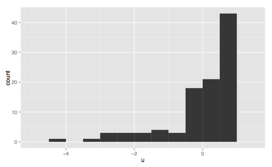

A probability distribution is a mathematical function that describes the likelihood of a set of possible occurrences taking place. By randomly drawing samples from a distribution, called sampling, we can expect our random selections to match the true distribution of the data as our number of samples approaches infinity (see the law of large numbers).
You can think of a probability distribution as a histogram. A histogram features an ordered list of occurrences on the x-axis (called the domain) and the number of times those occurrences are present in some experiment as the y-axis (called the range). Below is an example of a measuring the pedal length feature from the famous Iris dataset.
source: Wikipedia (user Daggerbox)
plt.figure(figsize=(20,10))
Many probability distributions fall into a few categories of distribution types. These are not one-size-fits-all categories and not all distributions will clearly belong to these archetypes, but they can be helpful in understanding how your data is distributed.

This is one of the most common (and famous) continuous distribution types, called the normal or Guassian distribution (informally the bell curve). It appears all over the place in nature. For this reason it is "often used in the natural and social sciences to represent real-valued random variables whose distributions are not known" (Wikipedia).
GAUSSIAN CODE EXAMPLE HERE
The Guassian distribution is particularly helpful because when the number of observations is particularly large, it is often the case that averages of samples of independent random variables) independently drawn from different distributions converge to a distribution that is normal, even if the original variables themselves are not normally distributed. This phenomenon is known as the central limit theorem, and it is particularly important because it "implies that probabilistic and statistical methods that work for normal distributions can be applicable to many problems involving other types of distributions." (the frequency of the average of a non-normal distribution is commonly normal)
As your sample size from an arbitrary distribution becomes larger, the frequency distribution of that sampling becomes more normally distributed. Taking 10,000 samples of sample size four will have a an equal mean, but a larger variance than if you were to use a sample size of 10. As sample size increases the distribution of your sampling converges at a normal distribution.
If we add a bunch of samples of any real-world occurrence with an unknown non-normal distribution, average each sample together, and plot their frequency (real-value or index as domain, frequency as range) the resulting distribution will approach normal as our sample size increases. Therefore, the normal distribution is a great approximation of the mean of a lot of processes.
The resulting distribution is called the *Sampling Distribution of the sample mean." The mean of the Sampling Distribution will be the same as the mean of the distribution being sampled.
There is not one perfect normal distribution. There are infinitely many, each with their own average and std dev.
skew = measure of asymmetry
kurtosis = tailedness (longer tail = more kurtosis)
The smaller the magnitude of skew and kurtosis the more normal a distribution is.
https://www.youtube.com/watch?v=JNm3M9cqWyc
https://www.youtube.com/watch?v=FXZ2O1Lv-KE

UNIFORM CODE EXAMPLE HERE
Skew normal distribution is a generalization of the normal distribution to non-symettric gaussians (non-zero skewed gaussians).
aka Positive skew
aka Negative skew



source for all histogram types: Wikipedia (user Visnit)